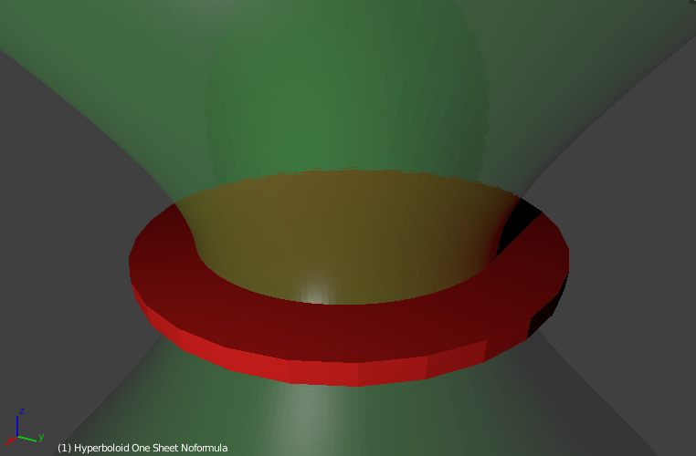
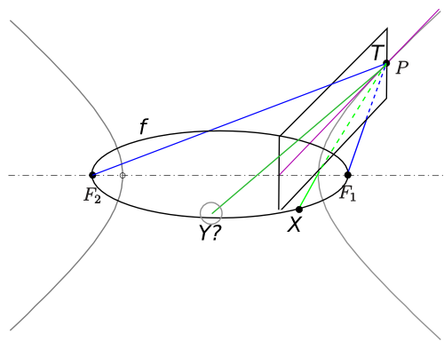

© Jaspower
This all originated from a post in reddit's r/mildlyinteresting by user Jaspower. Looking at his cup the redditor noticed that the reflection of the saucer lined up with the saucer itself when viewed from a specific angle.
Being interested in maths and geometry this got me thinking: Is there a shape that would make this work from any angle? I soon came up with an idea and posted it on the math subreddit.
This post contains a brief explanation of my idea and finally includes a proof.
(Note that I tried to keep the proof simple, so the phrasing may sometimes be inexact)
I soon discovered that if there was a cup shape with the desired property it would have to be a hyperboloid - which is some sort of "3d hyperbola".
A Hyperbola has an interesting property: any ray cast from one of its focal points will be reflected in such a way that it appears to originate from the other focal point.
In the image below this means an observer (in the top right corner) looking in the direction of F2 would actually always see the mirror image of F1. The reason behind this is that the tangent in any point of a hyperbola will always be the angle bisector of the two lines leading towards the focal points.
(based on this image (CC-BY-SA))
As this works in 2 dimensions I hoped it would work in 3 dimensions as well and I came up with the following
Conjecture: To fulfill the desired property the cup has to be a hyperboloid and the rim of the saucer has to be the locus of all focal points of hyperbolas on the hyperboloid's surface.
The locus of all focal points is a circle which we will label f.
Does this conjecture hold up against a quick check? A visualization in Blender shows it does:
Soon I also received visualizations from other people: codepen user kzf created a great interactive WebGL visualization (doesn't work on all browsers).
Through our arguments in the 2D case we're already very close to a proof.
(based on this image (CC-BY-SA))
We already know:
If we mirror the line PF1 along the tangent plane T we will get the line PF2.
Now we want to know:
If we mirror a random line PX along the tangent plane - will we get a line that hits the circle f as well?
Let's imagine X moves along the cirlce f. Which shape would the connecting line PX sweep out?
The answer is: an elliptic cone (image) - note that I'm referring to the infinite surface, not the solid.
An elliptic cone always has two planes of symmetry. In our case, one of these planes of symmetry must be the tangent plane T - as T is the plane of symmetry between PF1 and PF2.
Therefore we know: Mirroring the elliptic cone along T will transform it into itself.
Thus, mirroring any line on the elliptic cone will result in another line on the cone. So:
A ray that's directed at a point of the circle f and gets reflected will always end up hitting another point on f.
If we reverse the direction of the ray in our minds we're able to confirm our conjecture.
I hope you enjoyed the read. If you have comments, message me on reddit or email me!
{kind=link}
{kind=link}